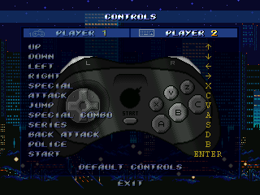

CONTROLS

This menu allows to modify both players controls using the tabs in the upper part. It's recommended to use both the cursor keys and the ENTER key to assign new controls so no conflicts arise.
CONTROLES
Este menú permite cambiar los controles de ambos jugadores usando las pestañas de la parte de arriba. Se recomienda usar los cursores y ENTER al asignar los controles para evitar conflictos.
31